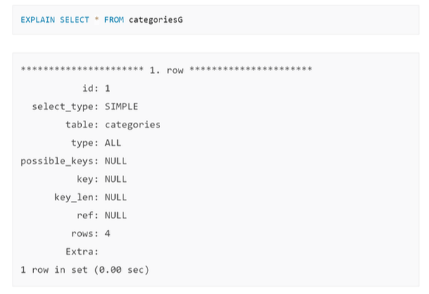
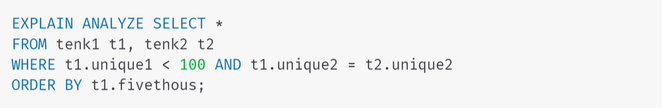
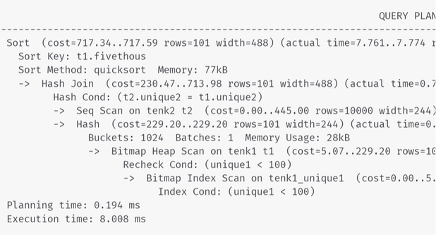
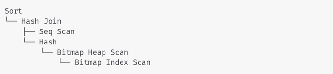
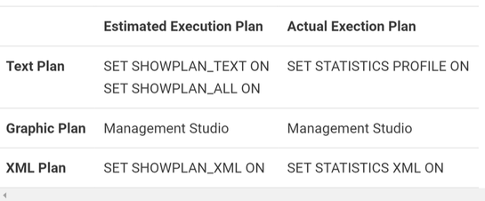
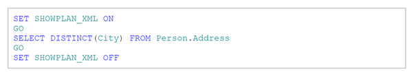
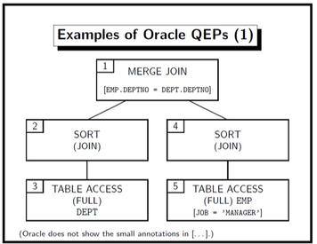
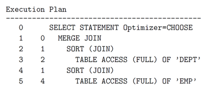

-

Mappatunru Production
Salamaki To Pada Salama
-

Mappatunru Production
Taro Ada Taro Gau
-

Mappatunru Production
Makkiade' Na Malempu'
Tulisan Mengenai "Evaluation Plan MySQL, PostgreSQL, SQL Server, dan Oracle"
MySQL menggunakan sintaks explain
Tergantung detail tabel, kolom, indeks, dan kondisi di klausa WHERE, pengoptimal MySQL mempertimbangkan banyak teknik untuk melakukan pencarian yang terlibat dalam query SQL secara efisien. Query pada tabel besar dapat dilakukan tanpa membaca semua baris; gabungan yang melibatkan beberapa tabel dapat dilakukan tanpa membandingkan setiap kombinasi baris. Rangkaian operasi yang dipilih pengoptimal untuk menjalankan query paling efisien disebut "query execution plan", juga dikenal sebagai rencana EXPLAIN. Tujuan Anda adalah untuk mengenali aspek dari rencana EXPLAIN yang menunjukkan bahwa query dioptimalkan dengan baik, dan untuk mempelajari sintaks SQL dan teknik pengindeksan untuk meningkatkan rencana jika Anda melihat beberapa operasi yang tidak efisien.
Perintah EXPLAIN memberikan informasi tentang bagaimana MySQL menjalankan query. EXPLAIN dapat bekerja dengan pernyataan SELECT, DELETE, INSERT, REPLACE, dan UPDATE. Pertama-tama akan menganalisis query asli, kemudian mencoba mengoptimalkan query dan melihat ke dalam rencana eksekusi query yang dioptimalkan untuk melihat apa yang berubah dan mengapa.Menggunakan EXPLAIN sesederhana pra-pending sebelum query SELECT

id - pengenal berurutan untuk setiap SELECT dalam query (untuk saat Anda memiliki subkueri bertingkat)
select_type - tipe query SELECT
table - tabel yang dirujuk oleh baris
type - bagaimana MySQL menggabungkan tabel yang digunakan. Ini adalah salah satu bidang yang paling berwawasan di keluaran karena dapat menunjukkan indeks yang hilang atau bagaimana kueri ditulis harus dipertimbangkan kembali.
possible_keys - menunjukkan kunci yang dapat digunakan oleh MySQL untuk menemukan baris dari tabel, meskipun mereka mungkin atau mungkin tidak digunakan dalam praktiknya. Faktanya, kolom ini sering kali dapat membantu dalam mengoptimalkan kueri karena jika kolom tersebut NULL, ini menunjukkan tidak ada indeks yang relevan dapat ditemukan.
key - menunjukkan indeks sebenarnya yang digunakan oleh MySQL. Kolom ini mungkin berisi indeks yang tidak terdaftar di kolom kunci_mungkin. Pengoptimal MySQL selalu mencari kunci optimal yang dapat digunakan untuk kueri. Saat bergabung dengan banyak tabel, ia mungkin menemukan beberapa kunci lain yang tidak terdaftar di kemungkinan_key tetapi lebih optimal.
key_len - menunjukkan panjang indeks yang dipilih Query Optimizer untuk digunakan. Misalnya, nilai key_len 4 berarti membutuhkan memori untuk menyimpan empat karakter.
ref - menunjukkan kolom atau konstanta yang dibandingkan dengan indeks bernama di kolom kunci. MySQL akan memilih nilai konstan untuk dibandingkan atau kolom itu sendiri berdasarkan rencana eksekusi kueri.
row - daftar jumlah record yang diperiksa untuk menghasilkan output. Ini adalah kolom penting lainnya yang perlu difokuskan pada pengoptimalan kueri, terutama untuk kueri yang menggunakan JOIN dan subkueri.
Extra - berisi informasi tambahan mengenai rencana eksekusi kueri. Nilai seperti "Using temporary", "Using filesort", dll. Di kolom ini mungkin menunjukkan kueri yang bermasalah.
Berikut beberapa kiat-kiat dalam menjalankan perintah EXPLAIN
1. Jalankan perintah EXPLAIN untuk memeriksa jalur eksekusi yang direncanakan untuk kueri SQL Anda.
2. Lihat tabel urutan yang dipilih MySQL untuk eksekusi
3. Temukan ketentuan di klausa WHERE yang paling selektif dan pastikan Anda membuat indeks yang optimal untuk menyertakannya
4. Cari tempat-tempat MySQL tidak menggunakan indeks untuk pencarian dan pemfilteran, karena itu mungkin titik lemahnya.
5. Cari baris di mana MySQL menunjukkan estimasi baris yang sangat tinggi yang perlu diperiksa untuk mengevaluasi kueri.
Postgre memiliki kemampuan hebat untuk menunjukkan kepada bagaimana ia akan benar-benar mengeksekusi kueri di bawah sampulnya. Ini dikenal sebagai rencana eksekusi dan yang diungkapkan oleh explain . Memahami ini memberi tahu bagaimana bisa mengoptimalkan database dengan indeks untuk meningkatkan kinerja. Bagian tersulit bagi sebagian besar pengguna adalah memahami keluaran dari ini. Meskipun ada banyak hal yang terlibat dalam pemahaman, berikut adalah beberapa hal utama yang harus diketahui sebagian besar pengembang.
Setiap kueri dalam Postgre memiliki rencana eksekusi saat dieksekusi. Ada tiga bentuk dari menjalankan explain untuk diekspos:
1. Bentuk umum (hanya menunjukkan apa yang kemungkinan besar akan terjadi)
2. Analisis formulir (yang benar-benar menjalankan kueri dan menghasilkan apa yang terjadi)
3. Bentuk verbose (menjauh)
Umumnya, explain dijalankan pada pernyataan SELECT. Namun, dapat juga digunakan pada:
INSERT, UPDATE, DELETE, EXECUTE, DECLARE
Berikut kueri yang diambil dari halaman Postgres Using EXPLAIN:


Postgres membangun struktur pohon dari node rencana yang mewakili berbagai tindakan yang diambil, dengan root dan masing-masing -> menunjuk ke salah satunya. Dalam beberapa kasus, EXPLAIN ANALYZE memberikan statistik eksekusi tambahan di luar waktu eksekusi dan jumlah baris, seperti Sort dan Hash di atas. Setiap baris selain yang pertama tanpa -> adalah informasi tersebut, jadi struktur kueri adalah:

Setiap cabang pohon mewakili sub-tindakan, dan Anda akan bekerja secara menyeluruh untuk menentukan apa yang terjadi "pertama" (meskipun urutan node pada tingkat yang sama bisa berbeda).
Kita bisa mendapatkan excecution plan aktual maupun sekedar estimasi untuk kueri tertentu, dan salah satu dari kedua jenis ini dapat ditampilkan sebagai grafik, teks, atau rencana XML. Satu-satunya perbedaan antara ketiga format ini adalah tingkat detail informasi yang ditampilkan. Namun, ketika rencana aktual diminta, kueri harus dijalankan, dan rencana tersebut kemudian ditampilkan bersama dengan hasil kueri. Di sisi lain, ketika perkiraan rencana diminta, kueri secara alami tidak dijalankan, dan rencana yang ditampilkan hanyalah rencana yang kemungkinan besar akan digunakan SQL Server jika kueri itu.dieksekusi (ingat bahwa kompilasi ulang, yang akan kita diskusikan nanti, dapat menghasilkan rencana yang berbeda pada waktu eksekusi). Namun demikian, menggunakan rencana yang diperkirakan memiliki beberapa keuntungan, termasuk menampilkan rencana untuk kueri yang berjalan lama untuk diperiksa tanpa benar-benar menjalankan kueri, atau menampilkan rencana untuk operasi pembaruan tanpa mengubah database.
Anda dapat menampilkan rencana grafis di SQL Server Management Studio dengan mengklik Display Estimated Execution Plan atau tombol Include Actual Execution Plan dari toolbar SQL Editor, yang diaktifkan secara default. Mengklik Display Estimated Execution Plan akan segera menampilkan rencana tanpa menjalankan kueri, sedangkan untuk meminta rencana eksekusi yang sebenarnya Anda perlu mengklik Include Actual Execution Plan dan kemudian mengeksekusi kueri.

Seperti yang Anda lihat di Tabel 1, ada dua perintah untuk mendapatkan perkiraan rencana teks; SETEL SHOWPLAN_TEXT dan SET SHOWPLAN_ALL. Kedua pernyataan tersebut menunjukkan perkiraan rencana pelaksanaan, tetapi SET SHOWPLAN_ALL juga menunjukkan beberapa informasi tambahan, termasuk perkiraan jumlah baris, perkiraan biaya CPU, perkiraan biaya I / O, dan perkiraan biaya operator. Namun, versi terbaru dari Buku Daring, termasuk SQL Server 2008 R2, menunjukkan bahwa semua versi teks rencana eksekusi akan ditinggalkan di versi mendatang dari SQL Server.
Untuk memperlihatkan rencana XML Anda bisa menggunakan perintah berikut:

Rencana evaluasi query (Oracle menyebutnya sebagai "excecution plan") adalah program untuk mesin abstrak (juru bahasa) di dalam DBMS. Ini dihasilkan oleh pengoptimal query. Dalam kebanyakan sistem, query evaluation plan (QEP) mirip dengan ekspresi aljabar relasional (sangat bergantung pada sistem). Misalnya, perhatikan query SQL berikut
SELECT ENAME, DNAME
FROM EMP, DEPT
WHERE EMP.DEPTNO = DEPT.DEPTNO
AND JOB = ’MANAGER’

Cara Melihat Query Evaluation Plan (QEP) Oracle :
1. Pertama, buat tabel "PLAN_TABLE" dengan kolom yang ditentukan di mana Oracle akan menyimpan informasi tentang QEP. Tabel harus ada di bawah akun setiap pengguna yang ingin melihat QEP (gunakan Contoh 1 sebagai ilustrasi)
2. Cara termudah untuk melakukannya adalah dengan menjalankan skrip $ORACLE_HOME/rdbms/admin/utlxplan.sql
3. Kemudian masukkan perintah berikut di SQL * Plus: SET AUTOTRACE ON EXPLAIN
4. Kemudian Oracle akan menampilkan informasi tentang QEP untuk semua query (tidak semua detail, hanya struktur umum). Jika seseorang keluar dari SQL * Plus, pengaturan AUTOTRACE akan terlupakan, tetapi PLAN_TABLE masih ada.
5. Output yang Anda dapatkan dari AUTOTRACE bukan dalam bentuk grafik seperti gambar di atas, tetapi dalam bentuk tekstual (dengan lekukan)
6. Output yang Anda dapatkan dari AUTOTRACE bukan dalam bentuk grafik seperti gambar di atas, tetapi dalam bentuk tekstual (dengan lekukan). Contoh (menggunakan ilustrasi Contoh 1):

7. Angka pertama mengidentifikasi node pohon (ditampilkan di atas di sudut kiri atas), angka kedua adalah node induk.